中断 & 异常处理¶
Exceptional Control Flow¶
在正常的程序运行状态下，控制流 (可以认为是 pc 指针的序列) 是按照程序所预定的顺序一步步执行的。但是，操作系统不可避免地需要处理一些在“预定之外的”情况，例如程序出错、或者外部状态有所改变，比如有数据包抵达网卡、用户敲击键盘等事件。现代操作系统通过改变控制流来处理这些事件，我们将这种控制流称为 Exceptional Control Flow (异常控制流)。
Exceptions, Traps, and Interrupts¶
在 RISC-V 体系架构中，我们将 Exception (异常)、Trap (陷阱) 和 Interrupt (中断) 定义如下：
- Exception: 一种不寻常的情况，出现在指令执行的时刻。
- Interrupt: 一种外部的事件，与当前 RISC-V 核心指令执行是异步的。
- Trap: 一种同步的、由于异常导致的控制流转移。我们可以将 Trap 认为是对 Exception 和 Interrupt 的处理行为。
什么是同步/异步 (Synchronous / Asynchronous)
回想在数字逻辑课程上实现的单周期 RISC-V CPU，我们有时钟信号 clk，每(n)个时钟周期执行一条指令。
同步的异常是由于指令执行时产生的，所以异常的产生是与 clk 对齐的；而异步的异常则完全与当前指令、clk无关。
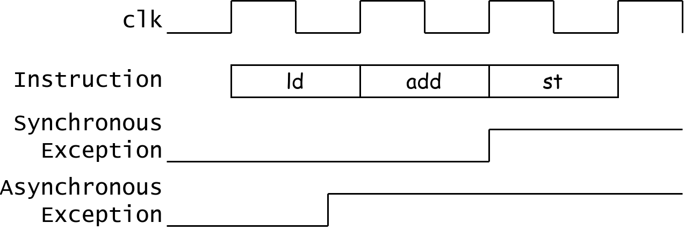
所以，很显然为什么 Trap 所指的控制流转移是“同步”的：我们起码需要等待时钟周期来临才能进行控制流转移。
We use the term exception to refer to an unusual condition occurring at run time associated with an instruction in the current RISC-V thread. We use the term trap to refer to the synchronous transfer of control to a trap handler caused by an exceptional condition occurring within a RISC-V thread. Trap handlers usually execute in a more privileged environment.
We use the term interrupt to refer to an external event that occurs asynchronously to the current RISC-V thread. When an interrupt that must be serviced occurs, some instruction is selected to receive an interrupt exception and subsequently experiences a trap.
Source: riscv-spec-v2.1.pdf, Section 1.3 "Exceptions, Traps, and Interrupts".
RISC-V 与 x86 的不同：
在不同的教材中，我们对 Exception (异常)、Trap (陷阱) 和 Interrupt (中断) 有着类似的定义，例如 CSAPP 参照 x86 模型描述了如下四种类型的控制流中断：主要区别在于异常控制流产生是否同步与指令流、以及跳转至异常控制流后时候会返回到原来程序的控制流。
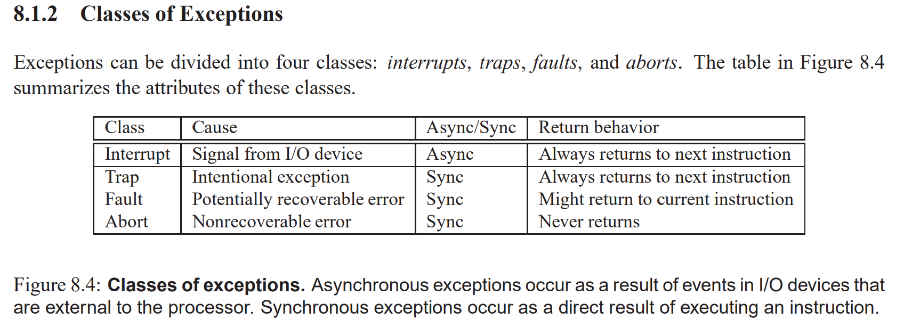
例如，x86 中的异常类型： Page Fault (缺页异常)，Machine Check (Abort) (内存或硬件错误)。
但是，在 RISC-V 模型下，上述的返回行为均是可以通过软件模拟的，所以在 RISC-V 硬件模型上，导致控制流改变的原因只有两种：异常 (Exception) 和中断 (Interrupt)。
CSR: mstatus/sstatus¶
CSR
如果你不清楚 CSR 是什么，请参照：QRH - CSR
mstatus/sstatus: Machine/Supervisor Status Register. 该寄存器保存着 RISC-V 核心的控制状态，sstaus 实际上是 mstatus 的一个 Restricted View.
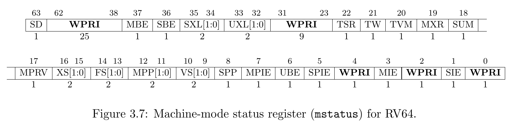
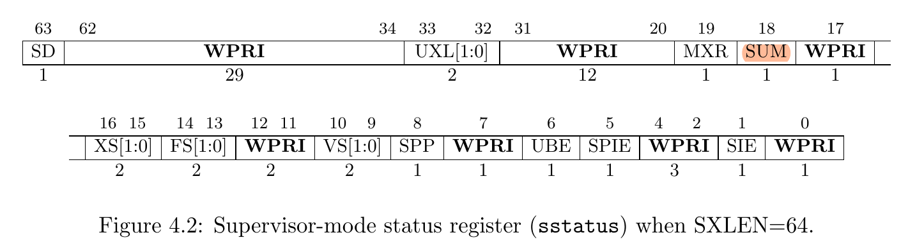
由于 RISC-V 的手册对 CSR 寄存器每个 Field 的定义实在是太难找，我们在此处提供一个用于快速查找的表：
| Field | 全称 (猜的) | 意义 |
|---|---|---|
| SPP | Supervisor Previous Privilege | 进入 Supervisor mode 前，Hart 所处的特权级。 |
| SIE | Supervisor Interrupt Enabled | Supervisor 下，中断启用标志位。 |
| SPIE | Supervisor Previous Interrupt Enabled | 进入 Supervisor 前的中断启用状态。 |
| SUM | Supervisor User-Memory | 允许 Supervisor 模式下访问带 U-bit 的页面 |
其他我们目前用不到的：
| Field | 全称 (猜的) | 意义 |
|---|---|---|
| FS/VS/XS | Float-Point Status / Vector Status / user-eXtension Status | 浮点模块/向量模块/用户自定义模块的状态，表示是否需要在中断处理器中保存它们 |
| SD | Status Dirty | FS/VS/XS 是否有 Dirty |
| MBE/SBE/UBE | Machine/Supervisor/User Big-Endianess | Machine / Supervisor / User 模式下是否使用大端序进行非取值的访存 |
| SXL/UXL | Supervisor/User XLEN | Supervisor/User 使用 32 位/64 位。 |
| MPRV | Modify PRiVilege | |
| MXR | Make eXecutable Readable |
Trap 相关寄存器：¶
我们首先列举一下在 Trap 处理流程中用到的寄存器：
- stvec : Supervisor Trap Vector Base Address Register
- 存储中断处理函数地址。一般称之“中断向量”，我们会在后续讲解。
- sip : Supervisor Interrupt Pending
- 表示有哪些中断等待处理
- sie : Supervisor Interrupt Enabled
- 表示可以处理那些中断
- 注意不要与 sstatus.SIE 搞混。
- sepc: Supervisor Exception Program Counter
- 发生中断时的 PC 指针
- scause: Supervisor Cause
- 发生中断的原因
- stval: Supervisor Trap Value
- 发生中断的额外信息
stvec¶
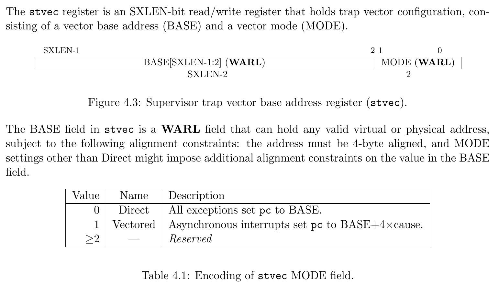
scause¶
When a trap is taken into S-mode, scause is written with a code indicating the event that caused the trap.
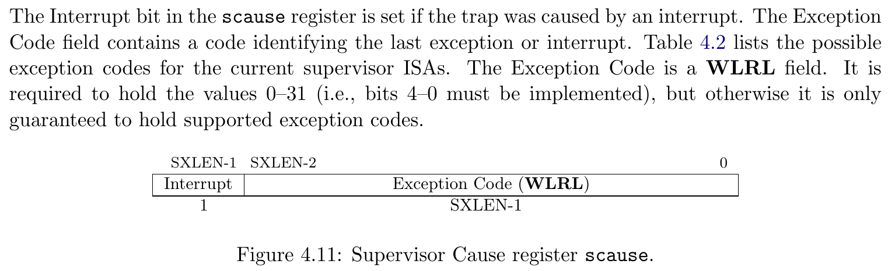
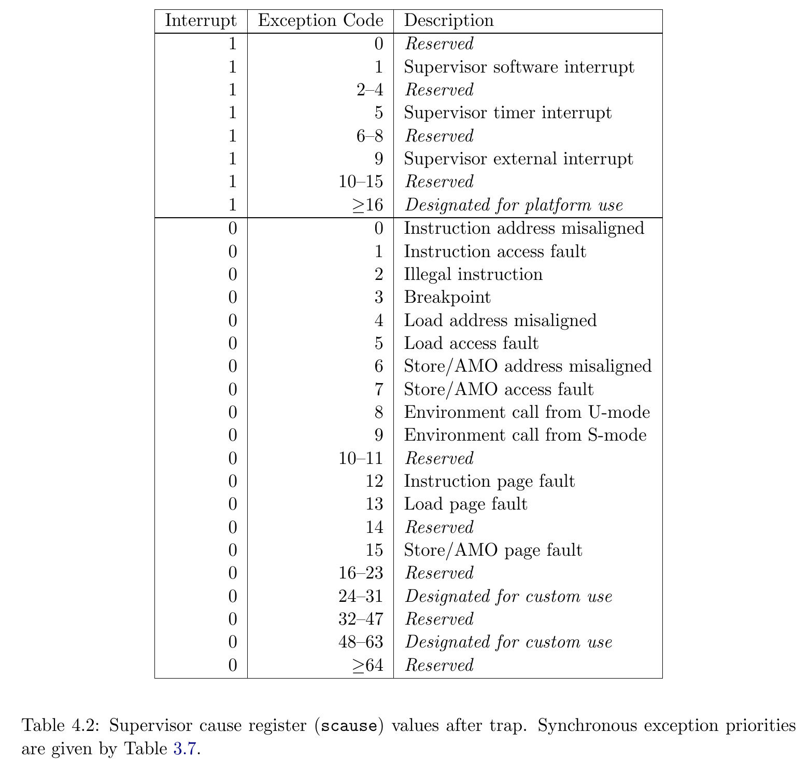
sie & sip¶
The sip register is an 64-bit read/write register containing information on pending interrupts, while sie is the corresponding 64-bit read/write register containing interrupt enable bits.
Interrupt cause number i (as reported in CSR scause, Section 4.1.8) corresponds with bit i in both sip and sie. Bits 15:0 are allocated to standard interrupt causes only, while bits 16 and above are designated for platform or custom use.
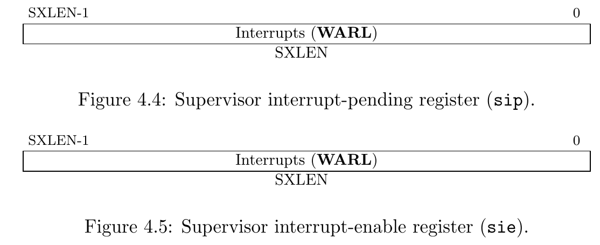
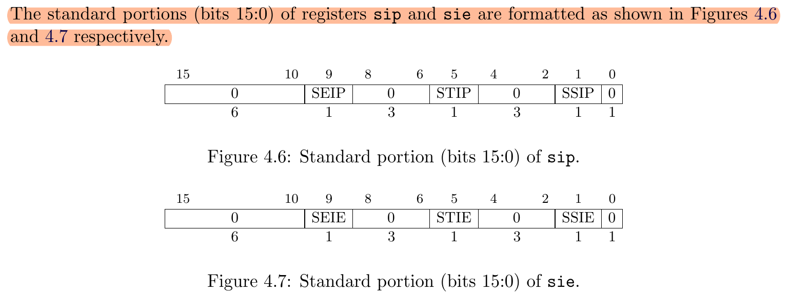
sepc¶
When a trap is taken into S-mode, sepc is written with the virtual address of the instruction that was interrupted or that encountered the exception.
stval¶
When a trap is taken into S-mode, stval is written with exception-specific information to assist software in handling the trap.
If stval is written with a nonzero value when a breakpoint, address-misaligned, access-fault, or page-fault exception occurs on an instruction fetch, load, or store, then stval will contain the faulting virtual address.
硬件处理流程¶
进入 Trap¶
当一个 Exception 发生时，或者 Hart 准备好处理 Interrupt 时， Trap 发生，CPU 在硬件电路上完成以下几件事情：
- scause <= {1b'Is_Interrupt, 63b'Cause}
- stavl <= Trap_Value
- sepc <= pc
- sstatus.SPP <= Current_Privilege_Level
- sstatus.SPIE <= sstatus.SIE
- sstatus.SIE <= 0
- pc <= stvec
用中文：设置 scause 与 stval，保存 PC 到 spec，保存当前特权级(U/S)到 sstatus.SPP，保存当前中断状态到 sstatus.SPIE，将中断关闭 sstatus.SIE = 0，跳转到 stvec。
sret¶
RISC-V 使用 sret 指令从 Supervisor 的 Trap 中退出，该指令会执行以下步骤：
- sstauts.SIE <= sstatus.SPIE
- Current_Privilege_Level <= sstauts.SPP
- pc <= epc
用中文：还原 sstatus.SIE 为 sstatus.SPIE，将特权级(U/S)设置为 sstauts.SPP，将 PC 设置为 sepc。
实际上 sret 就是 Trap 时三步保存的逆步骤：还原 SIE、特权级和 PC 寄存器。
什么时候能处理 Interrupt¶
RISC-V 定义了三种标准的中断：Software Interrupt, Timer Interrupt 和 External Interrupt，对应 scause 中的 Exception Code 1, 5, 9, 对应 sip/sie 中的第 1, 5, 9 bit.
进入中断的条件：
- (当前运行在 S 模式，且
sstatus.SIE== 1) 或者 当前运行在 U 模式。 - 中断类型 bit i 在
sie和sip中均为 1.
An interrupt i will trap to S-mode if both of the following are true:
(a) either the current privilege mode is S and the SIE bit in the sstatus register is set, or the current privilege mode has less privilege than S-mode; and
(b) bit i is set in both sip and sie.
当 Software/Timer/External Interrupt 到达 CPU 时，sip 中对应的 bit 会被拉高，然后 CPU 会按照如上条件进行检查，如果符合条件，则会进入 Trap。
Trap Handler¶
中断向量¶
stvec 规定中断向量入口一定是对齐到 4 bytes (即最后两 bit 为 0)；同时，用这两位表示两种模式：
- Direct 模式：所有 Trap 的入口均为 pc <= BASE
- Vectored 模式：对于异步的中断，pc <= BASE + 4 * cause
在我们的代码中，我们使用 Direct 模式。
我们在 entry.S 中定义了适用于S mode 的中断向量入口点 kernel_trap_entry ：
.globl kernel_trap_entry
.align 2
kernel_trap_entry:
// we store all registers in the stack
add sp, sp, -0x100
sd x0, 0x00(sp)
sd x1, 0x08(sp)
sd x2, 0x10(sp)
// ...
sd x30, 0xf0(sp)
sd x31, 0xf8(sp)
mv a0, sp // make a0 point to the ktrapframe structure
call kernel_trap
// restore all registers
//ld x0, 0x00(sp) // do not write to x0
ld x1, 0x08(sp)
ld x2, 0x10(sp)
// ...
ld x30, 0xf0(sp)
ld x31, 0xf8(sp)
// restore stack
add sp, sp, 0x100
// return from trap
sret
入口点在栈上申请 0x100 bytes 的空间，并保存所有通用寄存器到栈上，此时，栈上形成了结构体 struct ktrapframe，用于快速索引栈上保存的寄存器。然后，将 a0 设置为 sp，调用 kernel_trap ，进入 C 代码继续处理 Trap。
由于 RISC-V 使用 a0 作为传递第一个参数的寄存器，a0 此时指向栈上的 struct ktrapframe 结构体，kernel_trap 函数可以直接将第一个参数设为 struct ktrapframe* ktf。
void kernel_trap(struct ktrapframe *ktf) {
assert(!intr_get());
if ((r_sstatus() & SSTATUS_SPP) == 0)
panic("kerneltrap: not from supervisor mode");
if (mycpu()->inkernel_trap) {
print_sysregs(true);
print_ktrapframe(ktf);
panic("nested kerneltrap");
}
mycpu()->inkernel_trap = 1;
uint64 cause = r_scause();
uint64 exception_code = cause & SCAUSE_EXCEPTION_CODE_MASK;
if (cause & SCAUSE_INTERRUPT) {
switch (exception_code) {
case SupervisorTimer:
tracef("kernel timer interrupt");
set_next_timer();
// we never preempt kernel threads.
goto free;
case SupervisorExternal:
tracef("s-external interrupt from kerneltrap!");
plic_handle();
goto free;
default:
panic("kerneltrap entered with unhandled interrupt. %p", cause);
}
}
print_sysregs(true);
print_ktrapframe(ktf);
panic("trap from kernel");
free:
assert(!intr_get());
mycpu()->inkernel_trap = 0;
return;
}
在进入 kernel_trap 时，CPU 的中断位 sstatus.SIE 应该是保持关闭的，并且 Previous Privilege 应该是 Supervisor 模式。
然后，我们读取 scause 寄存器判断 Trap 是因为中断还是异常陷入的，并且我们处理时钟中断和 PLIC 管理的外部中断，对于其他预期之外的行为，我们可以打印栈上保存的 ktramframe 结构体帮助调试，并使用 panic 宏中断 CPU 执行。
最后，我们从 kernel_trap 离开。
从 C 语言环境退出后，我们从栈上恢复所有通用寄存器，恢复栈空间，然后使用 sret 退出 Trap。
下图展示了 进入 Trap，构造 ktrapframe，然后恢复并sret过程的栈结构：
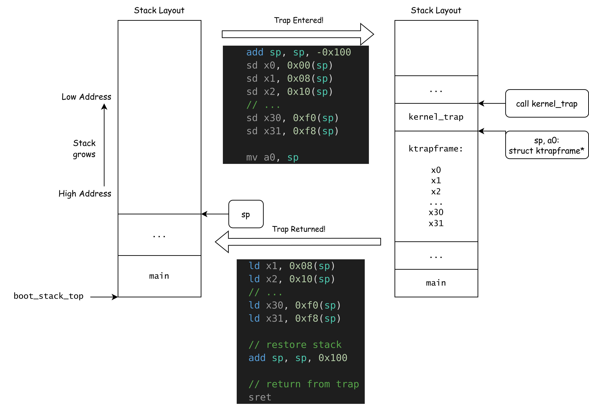
Lab TODO:
修改 main.c，在启动流程中加入 asm volatile("ebreak")，并在 kernel_trap 中处理该异常，并将 s0 寄存器的值改为 0x114514，使之后的 printf 输出该寄存器的值。
Interrupt¶
RISC-V spec 定义了每个 Hart 有三个标准的中断：时钟中断、软件中断和外部中断。
时钟中断¶
时钟中断可以理解为每隔一段时间执行一次的程序。即每隔一段时间，会固定触发一次的中断。在时钟中断的处理时，我们可以完成进程调度等操作。
RISC-V 平台提供了一个实时的时间计数器: mtime 寄存器，该寄存器以恒定的频率增长，并且在所有核心之间共享。另外，RISC-V 对每个核心提供了一个 mtimecmp 寄存器，每当 mtime >= mtimecmp 时，该核心就会拉高时钟中断的 sip.STIP bit，如果核心满足进入中断 Trap 的条件，则会进入时钟中断。
SBI 提供了一个 SBI call：SBI_SET_TIMER 允许 Supervisor 软件设置 mtimecmp 寄存器。在已知 mtime 寄存器的增长频率后，我们可以计算 10ms 后 mtime 会增长多少，并设置 mtimecmp 为该值，我们即可在 10ms 后收到一次时钟中断。在每次进入时钟中断时，我们再次计算下次的 mtimecmp，即可实现每 10ms 收到一次时间中断。
时钟部分的代码位于 timer.c。
在初始化时钟中断时，我们通过 SBI call SET_TIMER 设置 mtimecmp，并在 sie 中启用时钟中断 SIE_STIE。
在 kernel_trap 中处理时钟中断时，我们计算下一次的 mtimecmp，并再次 SBI call SET_TIMER，循环往复。
Lab 实验
请你将 TICKS_PER_SEC 宏修改为 1，make run 后观察每次触发时钟中断时的 cycle 读数。
注释掉 trap.c 中 kernel_trap 调用 set_next_timer，并再次 make run 观察每次触发时钟中断时的 cycle 读数。
请解释你的发现。
PLIC (Platform-Level Interrupt Controller)¶
PLIC 是 RISC-V 平台上用于管理外部中断的 IP 核，每个 RISC-V 平台拥有多个核心 (Hart)，而每个平台一般只有一个 PLIC。
Specification: https://github.com/riscv/riscv-plic-spec/blob/master/riscv-plic.adoc
PLIC 结构¶
PLIC 管理 1~1023 个中断源，每个中断源拥有一个优先级 Priority 。PLIC 将能够接收中断的对象 (Interrupt Targets) 称为 Hart Context (where a hart context is a given privilege mode on a given hart)，每个 Context 对应着一个 Hart 和一个特权级别。由于目前 RISC-V 没有规定 User-Mode Interrupt，（例如 RISC-V privilege spec 只规定了 mie/mip 和 sie/sip，对应着 Machine Mode 和 Supervisor Mode 的中断），我们可以认为每个核心拥有两个 Context。
PLIC 能够管理 0~15871 个 Context，能设置每个中断源是否允许路由至某个 Context (Enabled Bit)，每个 Context 能接收的 Priority Threshold。
PLIC 会拉起 Hart 的 mip.MEIP/sip.SEIP bit，而该 hart 是否进入 Interrupt 的 Trap 由上述 进入中断的条件 决定。
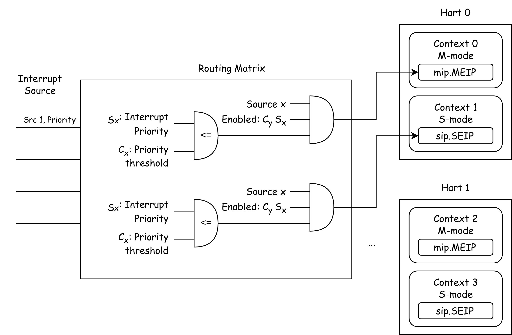
Memory-Mapped Register¶
PLIC 使用 Memory-Mapped Register 向系统暴露管理接口。对于每个寄存器 (消歧义：此处的寄存器不是特指 RISC-V 核心的 x0 - x31 General Purpose Registers)，我们使用偏移量来定位每个寄存器。通常，这种 IP 核有着固定的基地址，在 QEMU 上，这个地址是 0x0c00_0000
例如，Specification 中的 Memory Map 规定，base + 0x4 * i 是第 i 个中断源的
base + 0x000000: Reserved (interrupt source 0 does not exist)
base + 0x000004: Interrupt source 1 priority
base + 0x000008: Interrupt source 2 priority
...
base + 0x000FFC: Interrupt source 1023 priority
在 plicinit 中，我们向 base + 10*4 = 1 设置 UART0 (10号中断) 的 Interrupt Priority 为 1，在 plicinithart 中，我们将该 Hart 的 S-mode Context 允许来自 10 号中断、并设置 Priority Threshold 为 0，最后，启用该核心的 sie.SEIE 位，表示该核心允许 Supervisor-Mode External Interrupt。
Lab 练习
请对照 PLIC Specification 中的 Memory Map 解释 plic.c 中对所有 PLIC 的 Memory-Mapped Register 的访问，并解释它们的意义。
Claim & Complete¶
在 Hart 因为 External Interrupt 陷入 Trap 后，Hart 需要向 PLIC 申请处理该中断。在处理完成后，Hart 还需要向 PLIC 申明该中断处理完毕。